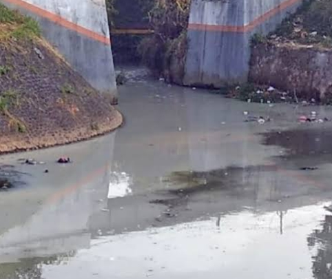

Judul Artikel: Pencemaran Air di Sungai Cicatih
Nama Penulis: M Fikal Wijaya
Lokasi Pengamatan: Cicurug, Cicatih
Tanggal Penulisan: 10-02-2026
Pencemaran air adalah masuknya zat berbahaya ke dalam perairan seperti sungai, danau, dan laut. Limbah industri, sampah rumah tangga, serta bahan kimia pertanian menjadi penyebab utama pencemaran air di Indonesia.
Air yang tercemar menyebabkan rusaknya ekosistem perairan, kematian ikan, dan menurunnya kualitas air minum. Masyarakat yang mengonsumsi air tercemar berisiko mengalami berbagai penyakit berbahaya.
Upaya pencegahan pencemaran air harus dilakukan bersama melalui pengolahan limbah, pengurangan plastik, serta peningkatan kesadaran lingkungan.
Pencemaran air tidak hanya terjadi di kota besar, tetapi juga di daerah pedesaan. Banyak sungai yang dulunya jernih kini berubah warna menjadi keruh dan berbau tidak sedap akibat pembuangan limbah secara sembarangan. Kondisi ini menunjukkan bahwa kesadaran masyarakat terhadap kebersihan lingkungan masih perlu ditingkatkan.
Salah satu penyebab terbesar pencemaran air adalah limbah industri yang dibuang tanpa proses pengolahan yang memadai. Zat kimia berbahaya yang terkandung dalam limbah tersebut dapat mencemari air tanah dan sumber air minum. Jika terus dibiarkan, pencemaran ini dapat menimbulkan dampak jangka panjang terhadap kesehatan manusia dan kelestarian lingkungan.
Selain itu, penggunaan pupuk dan pestisida secara berlebihan dalam bidang pertanian juga berkontribusi terhadap pencemaran air. Ketika hujan turun, zat kimia tersebut terbawa aliran air menuju sungai dan danau. Akibatnya, kualitas air menurun dan mengganggu keseimbangan ekosistem perairan.
Dampak pencemaran air sangat luas. Tidak hanya merusak habitat makhluk hidup di dalam air, tetapi juga mengancam kehidupan manusia. Air yang tidak layak konsumsi dapat menyebabkan berbagai penyakit seperti diare, gangguan kulit, dan masalah kesehatan lainnya. Oleh karena itu, menjaga kebersihan air merupakan tanggung jawab bersama.
Upaya pencegahan dapat dimulai dari hal sederhana, seperti tidak membuang sampah ke sungai, mengurangi penggunaan plastik sekali pakai, serta mendukung program daur ulang. Pemerintah juga memiliki peran penting dalam mengawasi pembuangan limbah industri dan menyediakan fasilitas pengolahan air yang memadai.
Edukasi lingkungan sejak usia dini sangat penting agar generasi muda memiliki kesadaran untuk menjaga kelestarian air. Dengan kerja sama antara masyarakat, pemerintah, dan pelaku industri, pencemaran air dapat dikurangi sehingga sumber daya air tetap terjaga untuk masa depan.